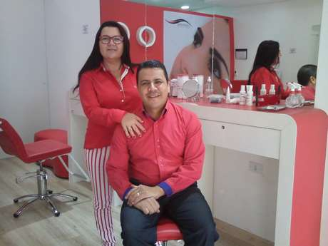

Demitido da indústria automotiva investe na área de estética
09/09/2015
Dispensado de uma montadora depois de 22 anos trabalhando na empresa, Edilson Gomes se reergueu abrindo uma unidade da franquia Sóbrancelhas
Depois de mais de duas décadas lidando com os operários de uma indústria automotiva, ele agora recebe clientes preocupadas em ajustar suas sobrancelhas. Vítima do aumento da taxa de desemprego no país, Edilson Gomes decidiu pegar o dinheiro da sua rescisão de contrato de trabalho e investir em uma franquia de estética, aproveitando os conhecimento de seu esposa, Cida Galvão, no setor.Edilson conta que trabalhou como técnico administrativo de uma montadora por 22 anos. Em virtude do tempo que tinha como funcionário, ele jamais imaginou que teria de repensar suas trajetória profissional. Porém, tudo mudou com a crise que atingiu o Brasil em 2015. Em março, não apenas ele, como sua filha, que trabalhava há seis anos na mesma empresa, e seu filho, que era aprendiz no local, perderam os empregos ao mesmo tempo.“Fiquei como um passarinho quando sai da gaiola, que não conhece o ambiente externo. Faltava pouco para me aposentar e a perspectiva de mudar de área era zero. Alcançar o mesmo patamar em outra empresa, com a idade que tenho, seria impossível”, revela.A solução para a família começou a aparecer quando sua filha foi convidada para fazer um bico ajudando uma amiga, que era dona de uma unidade da rede de franquias Sóbrancelhas. “Minha esposa tem curso na área de estética, mas ela sempre atendeu em domicílio, como um hobby. Porém, depois de observar o funcionamento da franquia, minha filha veio com a ideia de investirmos em uma unidade”, lembra.Edilson, então, decidiu unir seus conhecimentos em administração com a experiência da esposa em estética para empreender na área. Para tanto, pegou quase todo o dinheiro que recebeu com a rescisão e investiu em uma unidade da rede em Pindamonhangaba (SP), inaugurada no início de agosto.Apesar da mudança brusca, ele afirma que tem usado muitos conhecimentos da época em que trabalhava na indústria automotiva. “Sempre cuidei desta parte administrativa, então não muda muita coisa. A maior diferença está na forma de lidar com o público. Agora preciso ter atenção com o atendimento e na apresentação do serviço”, diz.Por outro lado, ele enxerga algumas vantagens no fato de ser dono do próprio negócio. “Está sendo ótimo para minha autoestima. Antes eu seguia apenas o que era repassado pela direção, mas agora posso implantar os meus conceitos de administração. Tenho muito mais liberdade para colocar em prática novas ideias”, resume, acrescentando que já pretende investir em uma segunda unidade, em São José dos Campos (SP).
Quer comentar? Mande seu comentário
Mande seu comentário aqui
Comentários:

Maria do Carmo Santana
Há 24 minutos atrás...
Faço lá

Diego Pagotto
Há 5 minutos atrás...
TOP